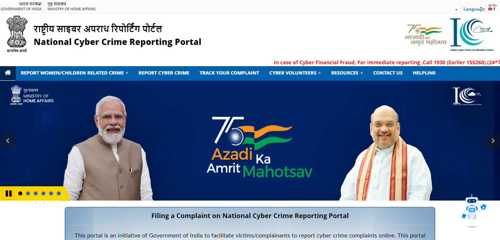
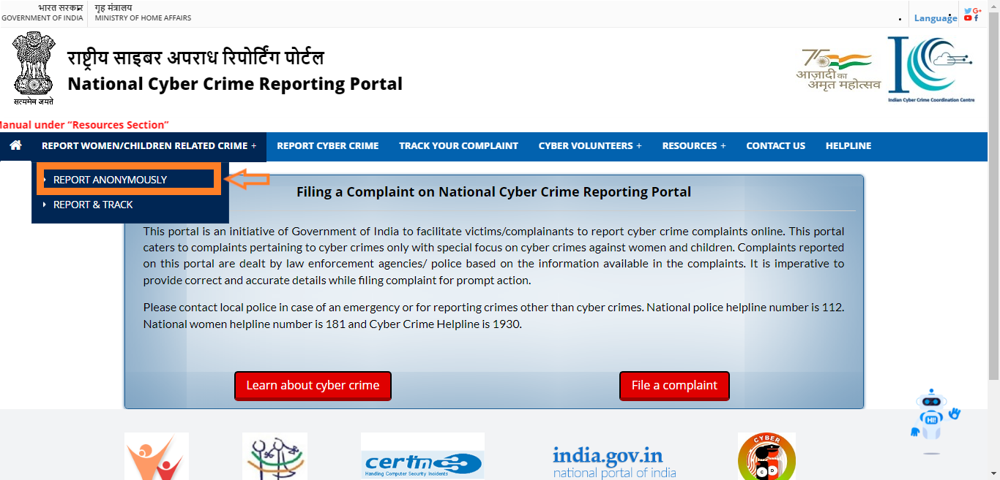
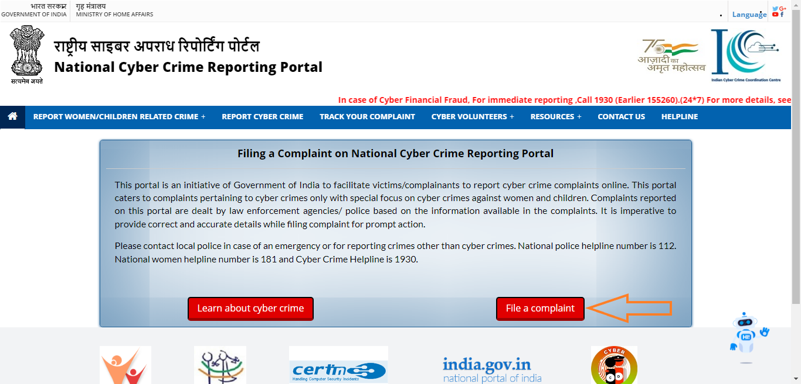
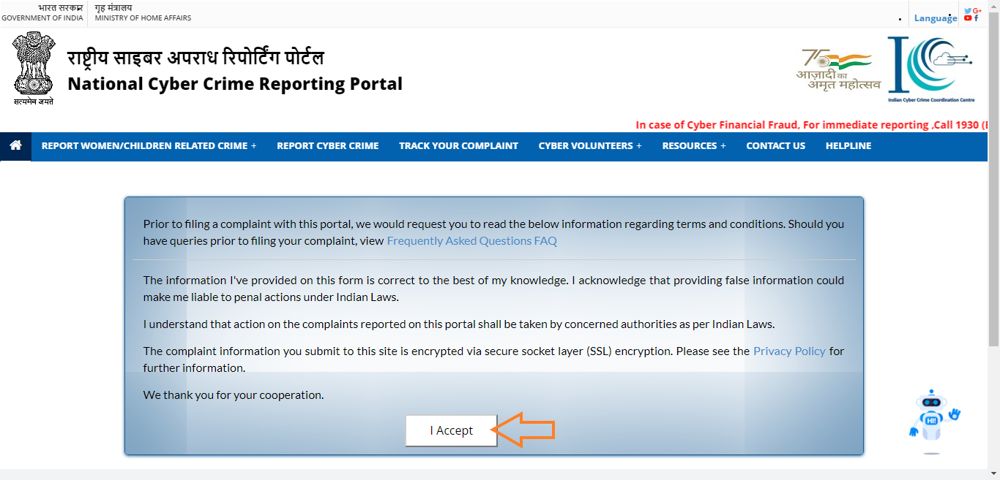
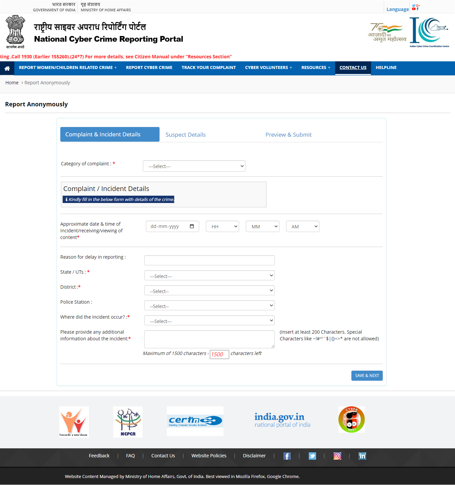
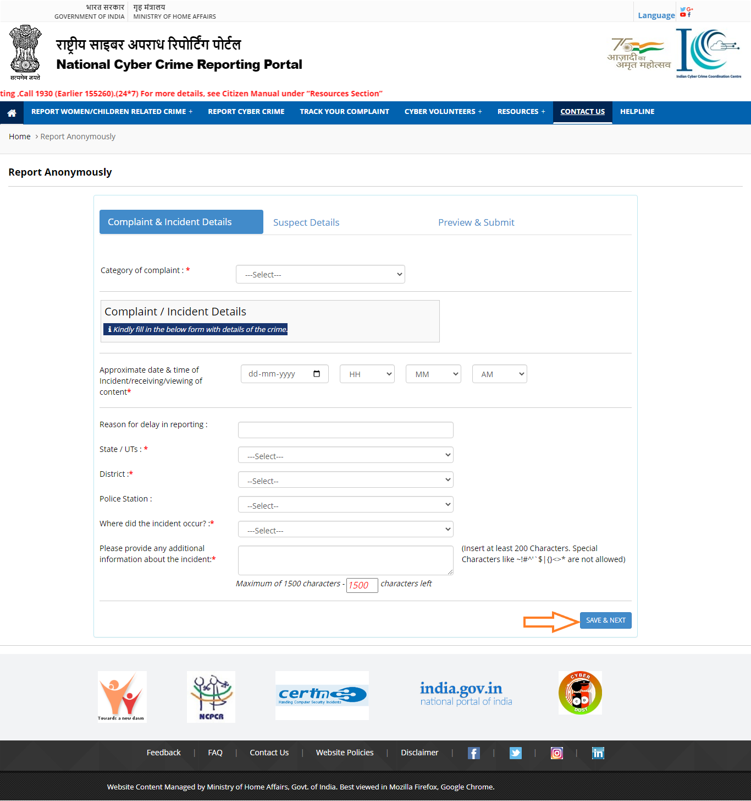
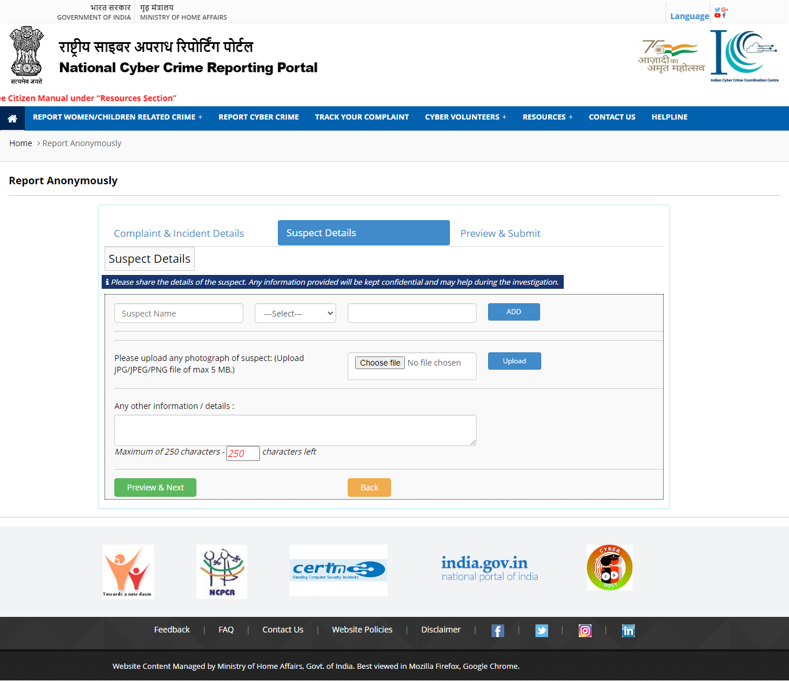
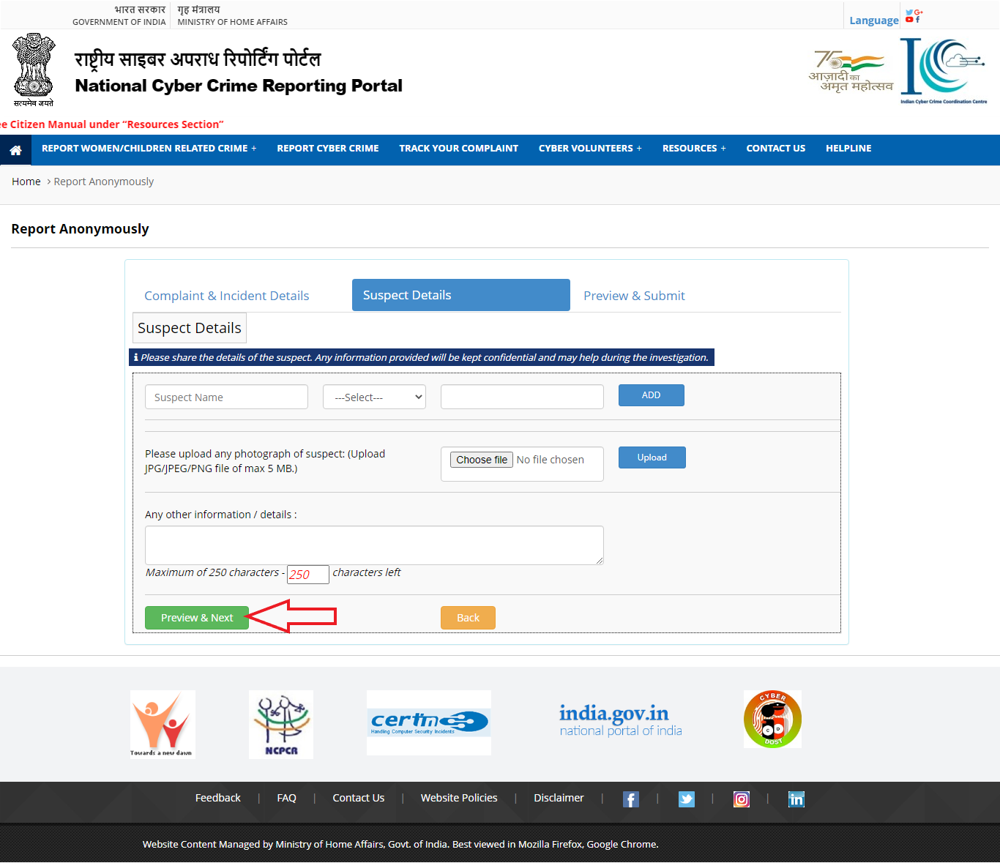
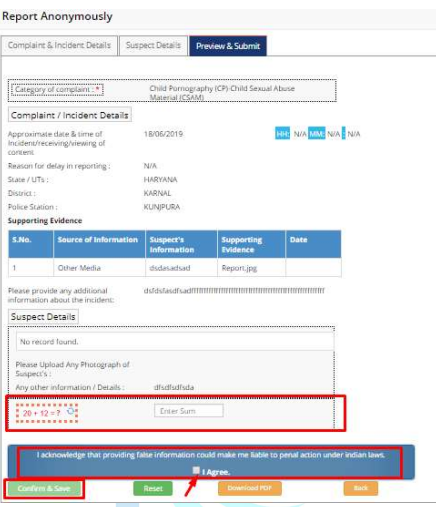
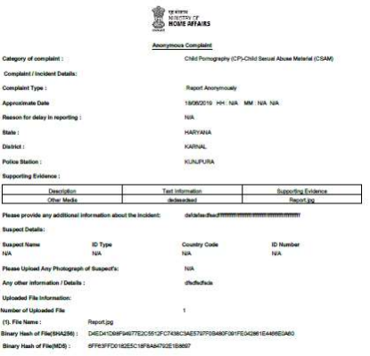

Cyber law or internet law is a term that encapsulates the legal issues related to the use of the internet. With the increase in number of crimes related to the Internet(frauds, tax evasion and phishing etc.),urgent need was felt to introduce an act of law against such crimes. With this view in mind the Indian Government introduced Information Technology Act 2000 also known as ITA-2000 or It act on October 17, 2000. The Act was used for electronic governance and for controlling cybercrimes. The prime purpose of this act was to provide legal recognition to transactions carried out by means of electronic communication, referred to as; Electronic Commerce’ and to facilitate the filing of electronic records with the government.
If you have been victim for a Cyber Crime then you can file the complain against that cyber crime online. Follow these steps:
Step 1: Go to the Government official site of Cyber Crime that is https://cybercrime.gov.in/
Step 2: Click on Report Women/Children Related Crime. Then Click on Report Anonymously
Step 3: Click on File Complaint.Then Click on Accept
 Step 4: Fill the form
Step 5:After Filling form Click on save and next
Step 6:Then Enter the Suspect Details.
Step 7:Then click on Preview & Next
Step 8: Then See the Preview of the Complain and also check all the spelling and everything very carefully. Then fill the Captch. Then Select the I Agree and click on Confirm & Save.
Sumbiting the complaint submission message will be displayed on the portal.
Step 9: Once you click on the “Download PDF” option, details of the complaint reported gets downloaded in PDF format, which could be used for further reference. Following are the sample of downloaded complaint.
